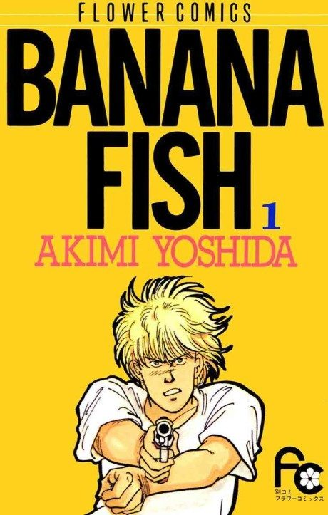

Banana Fish
BANANA FISH
The anime covers the whole manga.
8.4AniList score
—Animeter, no votes yet
24episodes
Anime finished. Where does the manga pick up?
StatusFully adapted
The 2018 anime adapts the whole manga. The side story Garden of Light, set seven years later, was never animated and is worth reading.
1105
2018 series
Sources: Wikipedia